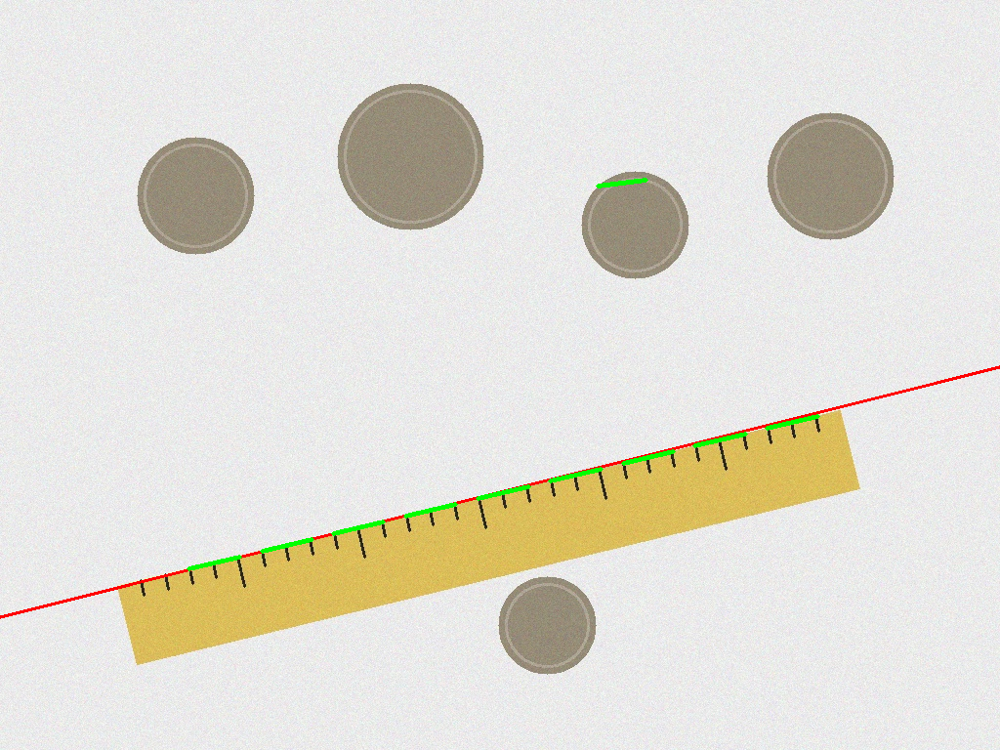
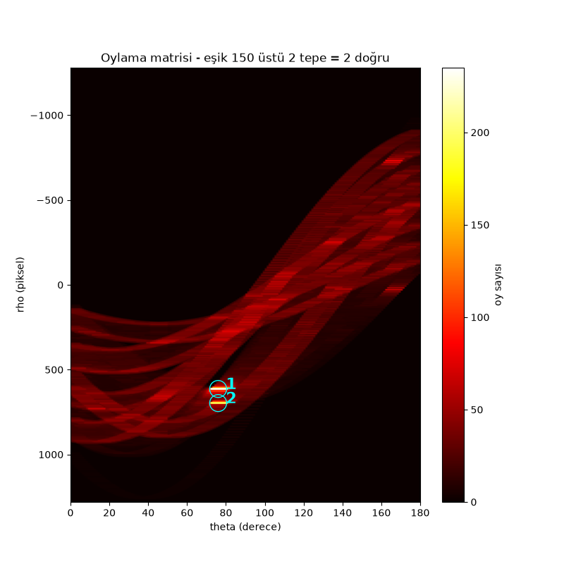
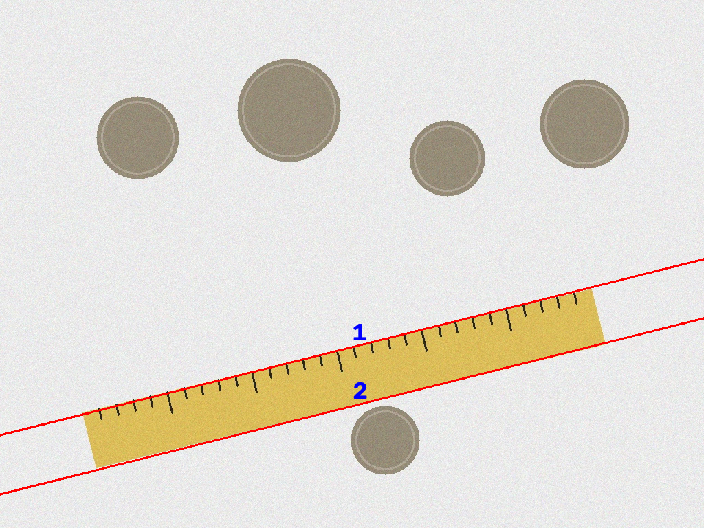
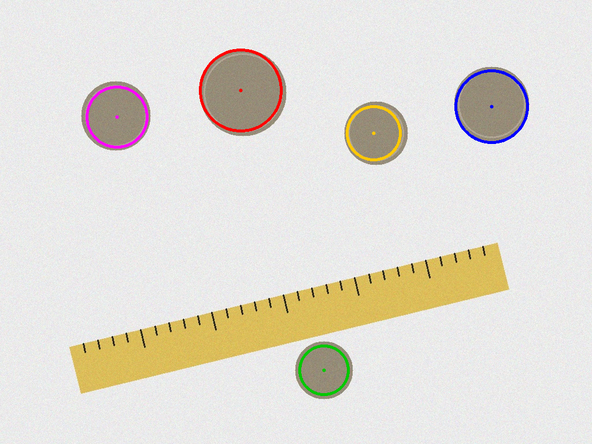
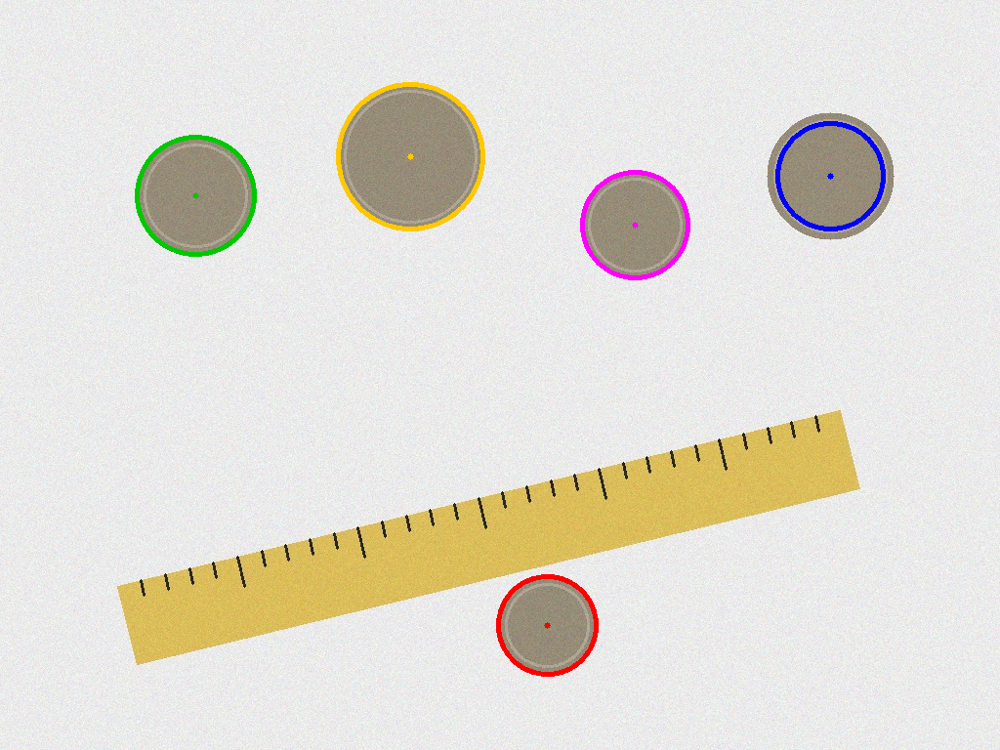
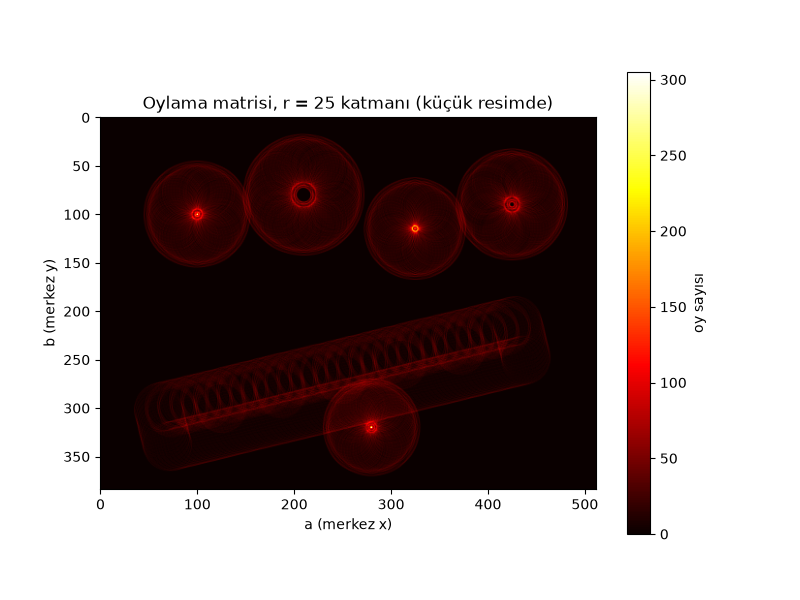
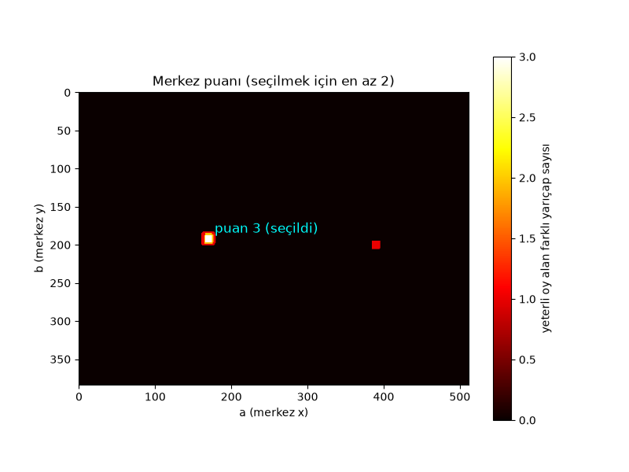
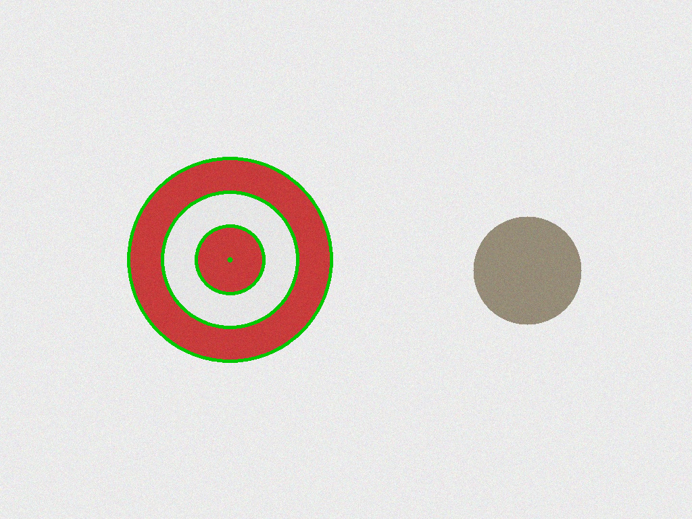

Ön işlem: Her resim 1024x768'e getirildi. Ödev metnine uygun olarak madde 1 ve 3'te Canny (50/150) → kenar resmine 3x3 median → OpenCV Hough; madde 2, 4, 5 ve 6'da Canny → kendi Hough kodumuz.

Gözlem: Median kenar resmine uygulanınca tek başına duran gürültü pikselleriyle birlikte 1 piksel kalınlığındaki ince kenarların çoğu da siliniyor (9166 → 2121 kenar pikseli, %77), çünkü çizgi pikselinin 3x3 komşuluğunda çoğunluk siyah. Bu yüzden eşikler düşürüldü (HoughLines 40, HoughLinesP 20). HoughLines doğruyu (rho, theta) olarak verir, resim boyunca sonsuz çizilir: çentiklerin kalınlaştırdığı için median'dan sağ çıkan cetvel üst kenarı bulundu (1 doğru); alt kenar median'da silindiği için bulunamadı. HoughLinesP uç noktalı parçalar verir: üst kenar kesik kesik 9 parça, bir para kenarında da 1 sahte parça.


sin/cos tabloları döngüden önce bir kez hesaplandı; her kenar pikseli 180 theta için
rho = x·cos + y·sin hücresine +1 oy verdi. Matristeki her kenar pikseli bir sinüs eğrisi çizer;
eğrilerin kesiştiği parlak tepe sayısı = doğru sayısı: eşik 150 üstünde 2 tepe, resimde 2 doğru
(1: rho=614, θ=76°, 235 oy; 2: rho=697, θ=76°, 197 oy). İki tepenin θ'sı aynı, çünkü cetvelin iki kenarı paralel.
Median uygulanmadığı için iki kenar da bulundu (madde 1'de alt kenar median'da kaybolmuştu); komşu hücreler
bastırıldığı için aynı doğru iki kez çizilmedi. Süre: ~1.1 s (OpenCV: ~0.01 s).


HoughCircles'a Canny → median'dan geçmiş kenar resmi verildi. Median çemberleri kesik kesik bıraktığı için oy eşiği düşürüldü (param2 = 15; 10'da sahte çemberler çıktı). 5 paranın hepsi bulundu, sahte çember yok; yarıçaplar gerçeğinden 3–10 piksel küçük, çünkü median dış kenarı daha çok seyreltti.

3 boyutlu oylama matrisi [a, b, r]: her kenar pikseli, her r ve 0–359° için a = x − r·cos,
b = y − r·sin merkezine oy verdi. Çemberin 3 bilinmeyeni (merkez x, y, yarıçap) olduğu için 3 boyut gerekir.
Saf Python döngüsü yavaş olduğundan resim 0.5 oranında küçültüldü (512x384) ve yarıçap 22–40 (küçük resimde)
aralığına daraltıldı; sonuçlar orijinal boyuta geri ölçeklendi. 5 paranın hepsi bulundu; 4'ünde merkez ve yarıçap
gerçeğiyle 1 piksel içinde, sağ üstteki parada ise kenar yerine iç kabartma (r=54, gerçek 65) seçildi.
Süre: ~27 s (OpenCV: ~0.01 s).


Madde 4'teki 3B oylama aynen yapıldı; ardından her merkez (a, b) için puan = o merkezde yeterli oy alan farklı yarıçap sayısı hesaplandı (yeterli: oy ≥ 0.5 × 2πr, çünkü büyük çember daha çok pikselden oy alır). En az 2 yarıçap şartı var. Tek duran paranın merkezi yalnız r=80'de oy topladığı için puanı 1 kalıyor ve seçilemiyor; hedefin merkezi r = 50, 100, 150'de oy topluyor, puanı 3. Bu post processing değildir: çemberler hiç tek tek bulunup gruplanmıyor, eş merkezlilik kararı doğrudan oylama matrisinden merkez başına veriliyor. Resim 0.5 oranında küçültüldü (0.25'te kenarlar kalınlaşıp sahte merkezler çıktı). Süre: ~31 s.
Madde 2'nin oylaması numba.cuda ile paralel yapıldı: her thread bir kenar pikseli alır, 180 theta için
oy verir; aynı hücreye aynı anda yazan thread'lerin oyu kaybolmasın diye cuda.atomic.add kullanıldı.
Colab'da Tesla T4 üzerinde çalıştırıldı: 9166 kenar pikseli × 180 theta = 1.649.880 oy; CPU ve GPU oylama
matrisleri np.array_equal ile karşılaştırıldı ve birebir aynı çıktı (iki tarafta da 1.649.880 oy).
| Madde | Yöntem | Resim | Süre |
|---|---|---|---|
| 1 | cv2.HoughLines + HoughLinesP | 1024x768 | 0.01 s |
| 2 | Kendi doğru Hough (Python, CPU) | 1024x768, 9166 kenar pikseli | 1.1 s |
| 3 | cv2.HoughCircles | 1024x768 | 0.01 s |
| 4 | Kendi çember Hough (Python, CPU) | 512x384 | 27 s |
| 5 | Kendi iç içe çember (Python, CPU) | 512x384 | 31 s |
| 6 | Madde 2 oylaması, Colab CPU (saf Python) | 1024x768, 9166 kenar pikseli | 2.589 s |
| 6 | Madde 2 oylaması, Colab T4 GPU (numba.cuda) | 1024x768, 9166 kenar pikseli | 0.0031 s · ~845 kat hızlı |
OpenCV fonksiyonları C++ ile yazıldığı için saf Python döngülerimizden yüzlerce kat hızlı. GPU'da binlerce kenar pikseli aynı anda işlendiği için oylama 2.589 s'den 0.0031 s'ye indi (veri kopyalama dahil; ilk çağrıdaki derleme hariç).
Notlar: (1) 845 kat, yorumlanan saf Python döngüsüne göre; derlenmiş bir CPU koduyla
(ör. numba.njit) karşılaştırılsaydı fark çok daha küçük olurdu. (2) GPU süresi tek ölçüm; 3 ms
çok kısa olduğu için çalıştırmadan çalıştırmaya oynayabilir. (3) numba "Grid size 36" uyarısı verdi: 9166 piksel
256'lık bloklara bölününce 36 blok çıkıyor, bu T4'ü tam doldurmaya yetmiyor; hata değil, iş küçük olduğu için.